单日六面板 · 156 场
返回图集目录 · 完整文件清单
真实集成方法 DOMAIN_CONTEXT_MAP；点击缩略图打开 300 dpi 原 PNG。缩略图为浏览副本，论文使用原 PNG。
RGB / RAW / B-Gaussian / EXPAND / RECON / 集成方法；各方法共用本日 RAW P2–P98。
S01_beijing_1012A_2021-02-21
2021-02-21 · 6600 × 1620 · 0.39 MiB · 色限 23.44–32.89 μg/m³
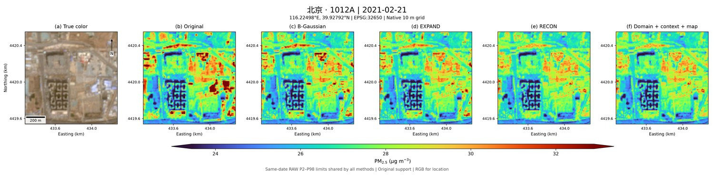
S01_beijing_1012A_2021-04-07
2021-04-07 · 6600 × 1620 · 0.39 MiB · 色限 7.66–17.80 μg/m³
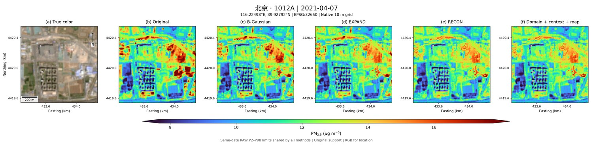
S01_beijing_1012A_2021-06-06
2021-06-06 · 6600 × 1620 · 0.39 MiB · 色限 21.12–30.45 μg/m³
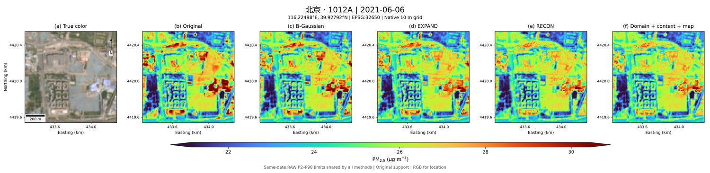
S01_beijing_1012A_2021-10-29
2021-10-29 · 6600 × 1620 · 0.38 MiB · 色限 71.44–76.75 μg/m³
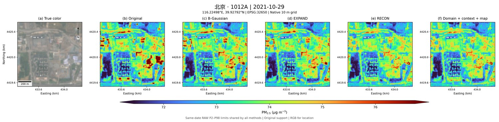
S02_dandong_1602A_2021-02-27
2021-02-27 · 6600 × 1620 · 0.37 MiB · 色限 30.55–36.38 μg/m³
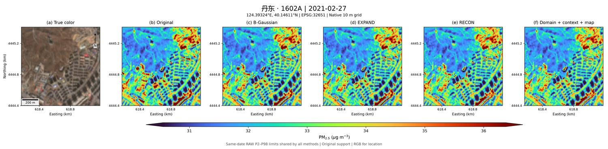
S02_dandong_1602A_2021-05-10
2021-05-10 · 6600 × 1620 · 0.37 MiB · 色限 8.57–15.87 μg/m³
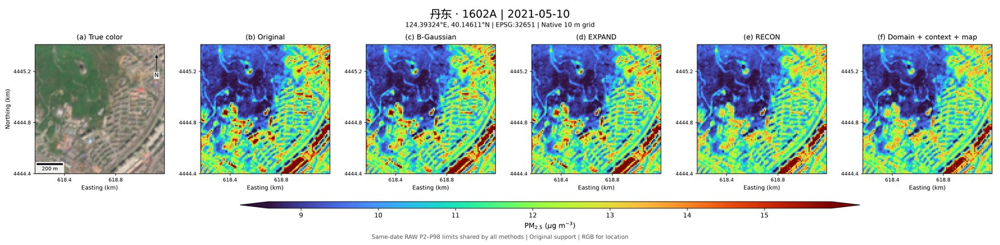
S02_dandong_1602A_2021-08-13
2021-08-13 · 6600 × 1620 · 0.37 MiB · 色限 2.97–12.74 μg/m³
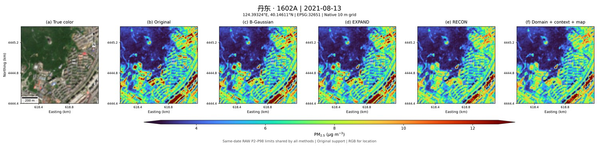
S02_dandong_1602A_2021-09-12
2021-09-12 · 6600 × 1620 · 0.36 MiB · 色限 -1.88–6.66 μg/m³
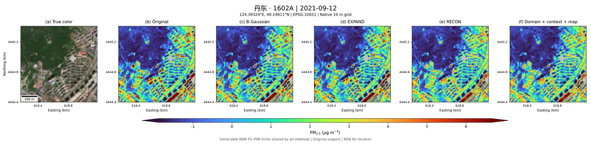
S03_daqing_1793A_2021-01-03
2021-01-03 · 6600 × 1620 · 0.40 MiB · 色限 20.55–31.57 μg/m³
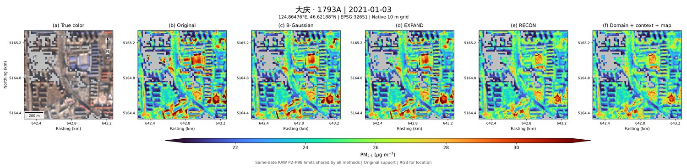
S03_daqing_1793A_2021-05-21
2021-05-21 · 6600 × 1620 · 0.41 MiB · 色限 18.95–30.18 μg/m³
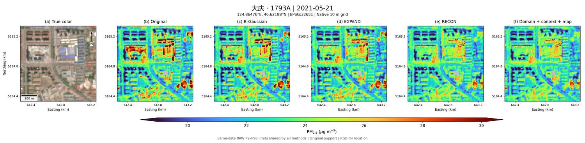
S03_daqing_1793A_2021-06-17
2021-06-17 · 6600 × 1620 · 0.42 MiB · 色限 7.83–23.75 μg/m³
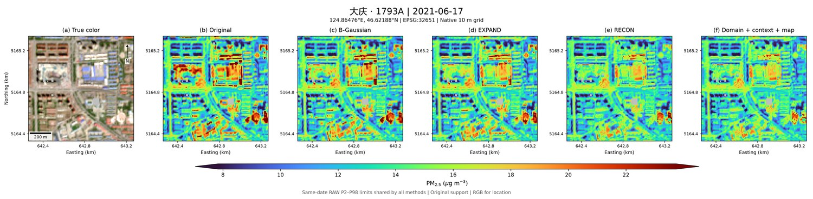
S03_daqing_1793A_2021-09-18
2021-09-18 · 6600 × 1620 · 0.41 MiB · 色限 0.65–13.28 μg/m³
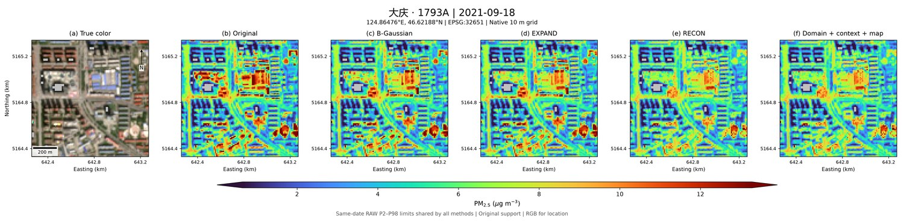
S04_jian_2368A_2021-01-09
2021-01-09 · 6600 × 1620 · 0.39 MiB · 色限 24.32–32.16 μg/m³
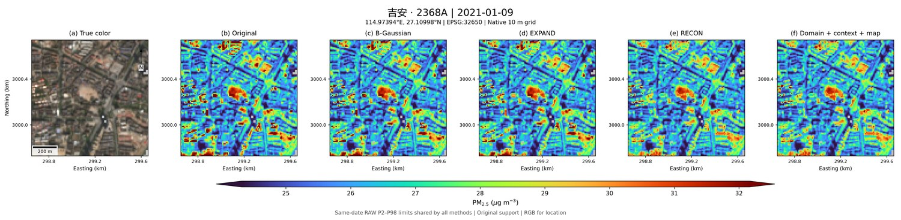
S04_jian_2368A_2021-05-14
2021-05-14 · 6600 × 1620 · 0.38 MiB · 色限 11.78–20.13 μg/m³
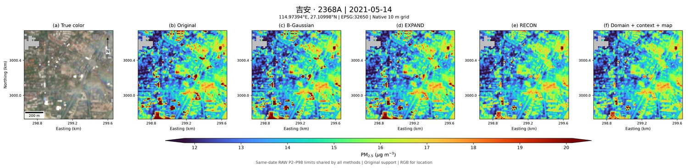
S04_jian_2368A_2021-06-08
2021-06-08 · 6600 × 1620 · 0.38 MiB · 色限 23.24–33.05 μg/m³
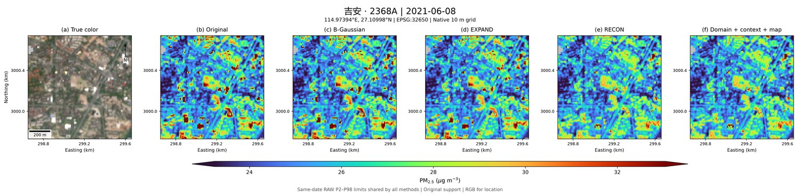
S04_jian_2368A_2021-09-01
2021-09-01 · 6600 × 1620 · 0.39 MiB · 色限 29.02–38.25 μg/m³
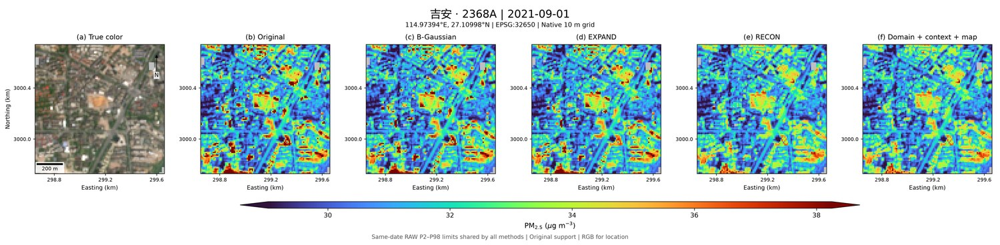
S05_jiaozuo_1829A_2021-01-12
2021-01-12 · 6600 × 1620 · 0.39 MiB · 色限 41.83–49.54 μg/m³
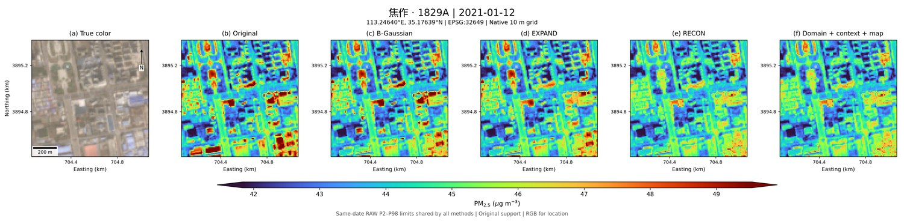
S05_jiaozuo_1829A_2021-05-27
2021-05-27 · 6600 × 1620 · 0.40 MiB · 色限 14.43–27.25 μg/m³
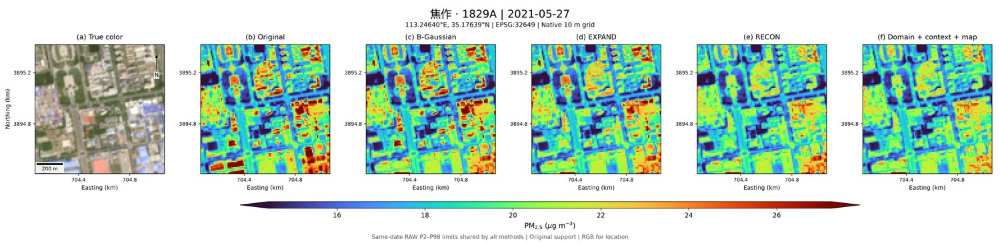
S05_jiaozuo_1829A_2021-06-06
2021-06-06 · 6600 × 1620 · 0.39 MiB · 色限 20.29–30.32 μg/m³
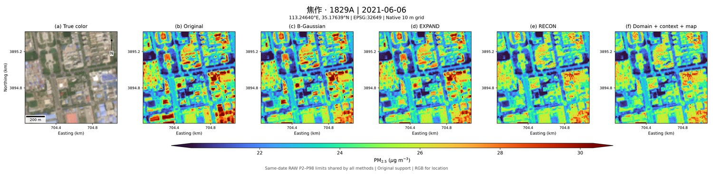
S05_jiaozuo_1829A_2021-09-29
2021-09-29 · 6600 × 1620 · 0.39 MiB · 色限 28.23–39.33 μg/m³
S06_jinan_1300A_2021-01-14
2021-01-14 · 6600 × 1620 · 0.38 MiB · 色限 117.07–131.80 μg/m³
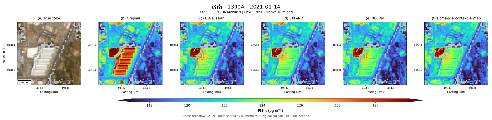
S06_jinan_1300A_2021-05-29
2021-05-29 · 6600 × 1620 · 0.39 MiB · 色限 20.53–41.83 μg/m³
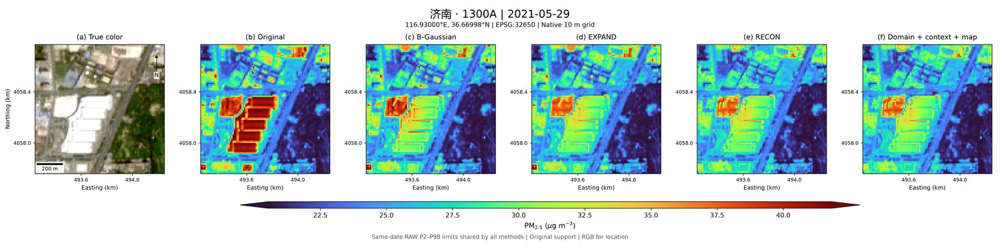
S06_jinan_1300A_2021-06-18
2021-06-18 · 6600 × 1620 · 0.39 MiB · 色限 11.71–32.66 μg/m³
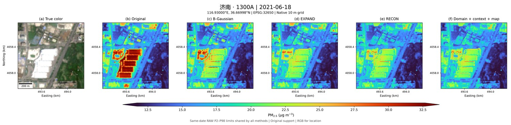
S06_jinan_1300A_2021-09-16
2021-09-16 · 6600 × 1620 · 0.39 MiB · 色限 26.94–42.88 μg/m³
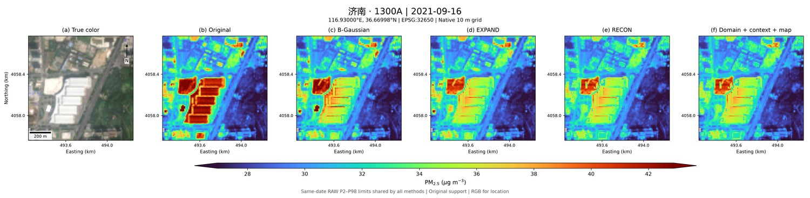
S07_jining_3678A_2021-02-23
2021-02-23 · 6600 × 1620 · 0.43 MiB · 色限 65.32–78.06 μg/m³
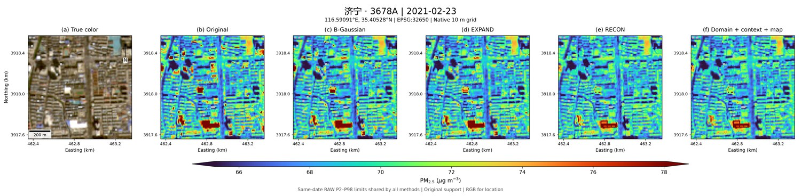
S07_jining_3678A_2021-05-24
2021-05-24 · 6600 × 1620 · 0.44 MiB · 色限 17.95–36.63 μg/m³
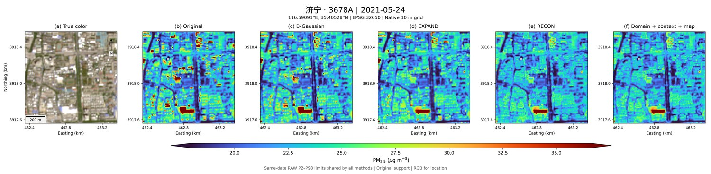
S07_jining_3678A_2021-06-08
2021-06-08 · 6600 × 1620 · 0.44 MiB · 色限 24.03–45.93 μg/m³
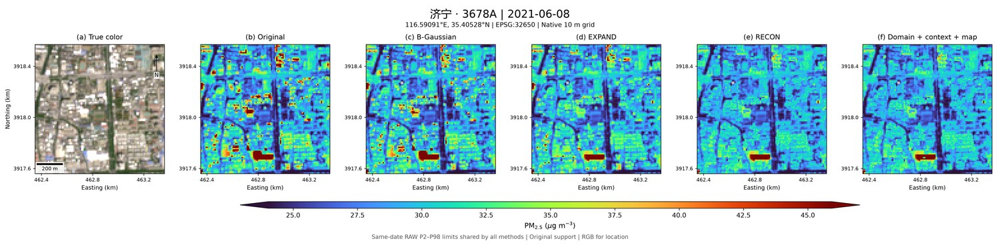
S07_jining_3678A_2021-09-11
2021-09-11 · 6600 × 1620 · 0.43 MiB · 色限 28.33–40.18 μg/m³
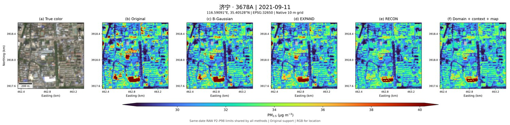
S08_linfen_3668A_2021-01-20
2021-01-20 · 6600 × 1620 · 0.40 MiB · 色限 114.58–119.57 μg/m³
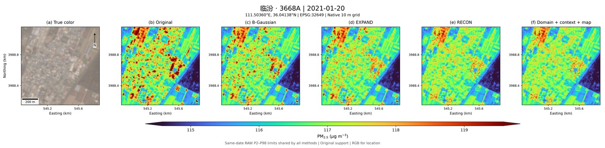
S08_linfen_3668A_2021-05-10
2021-05-10 · 6600 × 1620 · 0.41 MiB · 色限 43.65–52.52 μg/m³
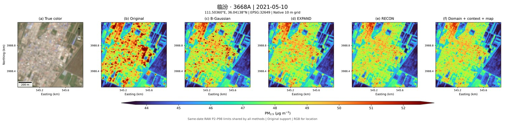
S08_linfen_3668A_2021-06-04
2021-06-04 · 6600 × 1620 · 0.41 MiB · 色限 14.81–23.46 μg/m³
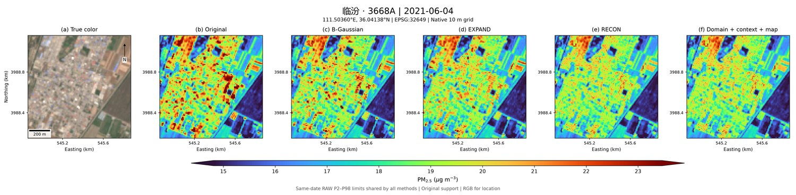
S08_linfen_3668A_2021-09-12
2021-09-12 · 6600 × 1620 · 0.39 MiB · 色限 29.40–38.30 μg/m³
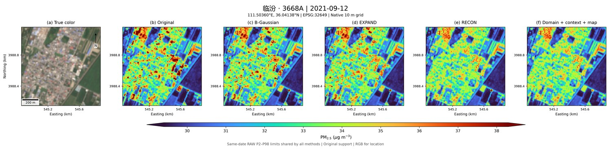
S09_nantong_1168A_2021-02-17
2021-02-17 · 6600 × 1620 · 0.41 MiB · 色限 7.18–15.84 μg/m³
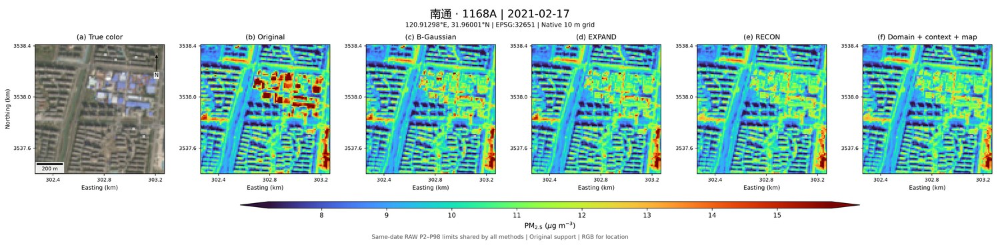
S09_nantong_1168A_2021-03-29
2021-03-29 · 6600 × 1620 · 0.41 MiB · 色限 46.89–56.77 μg/m³
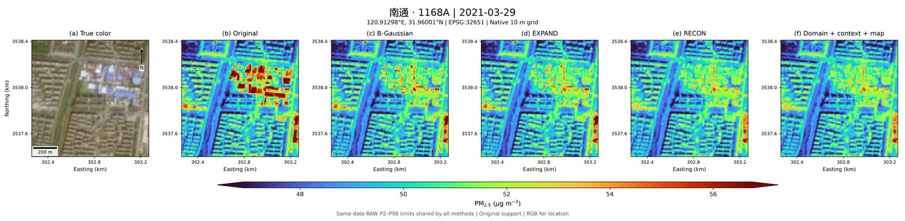
S09_nantong_1168A_2021-06-22
2021-06-22 · 6600 × 1620 · 0.41 MiB · 色限 17.18–27.51 μg/m³
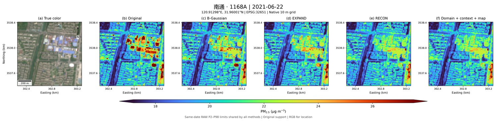
S09_nantong_1168A_2021-10-05
2021-10-05 · 6600 × 1620 · 0.41 MiB · 色限 6.05–17.68 μg/m³
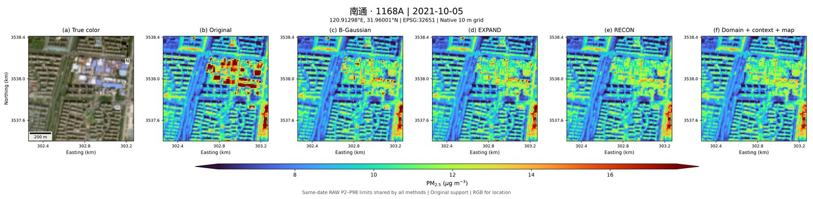
S10_nanyang_2406A_2021-02-21
2021-02-21 · 6600 × 1620 · 0.38 MiB · 色限 35.70–44.90 μg/m³
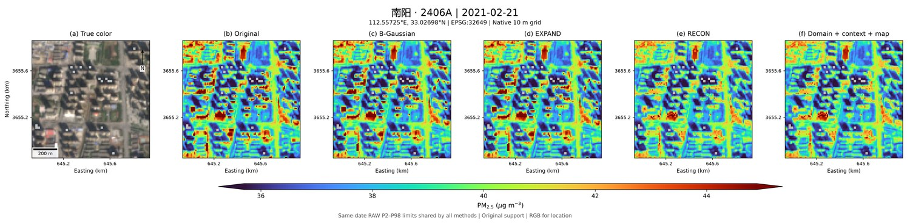
S10_nanyang_2406A_2021-04-12
2021-04-12 · 6600 × 1620 · 0.39 MiB · 色限 34.27–43.04 μg/m³
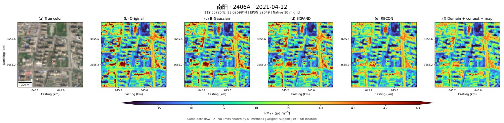
S10_nanyang_2406A_2021-06-06
2021-06-06 · 6600 × 1620 · 0.39 MiB · 色限 16.24–26.97 μg/m³
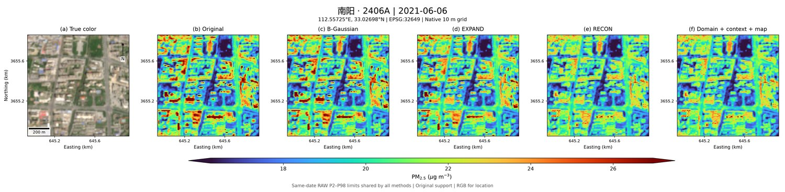
S10_nanyang_2406A_2021-09-14
2021-09-14 · 6600 × 1620 · 0.38 MiB · 色限 21.19–30.34 μg/m³
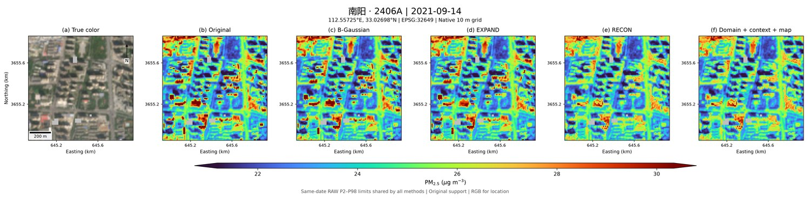
S11_tieling_2216A_2021-02-27
2021-02-27 · 6600 × 1620 · 0.39 MiB · 色限 53.71–60.68 μg/m³
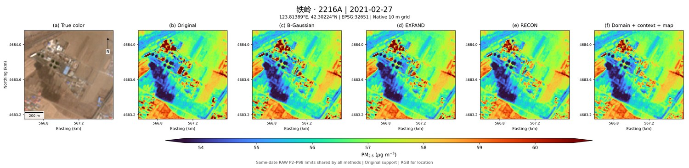
S11_tieling_2216A_2021-04-08
2021-04-08 · 6600 × 1620 · 0.39 MiB · 色限 20.03–24.53 μg/m³
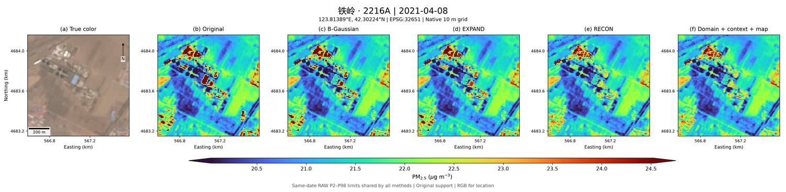
S11_tieling_2216A_2021-08-26
2021-08-26 · 6600 × 1620 · 0.37 MiB · 色限 6.79–13.57 μg/m³
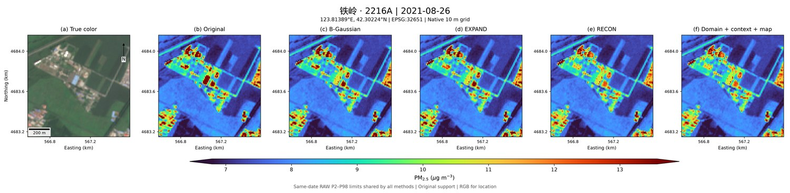
S11_tieling_2216A_2021-10-10
2021-10-10 · 6600 × 1620 · 0.37 MiB · 色限 -1.18–4.86 μg/m³
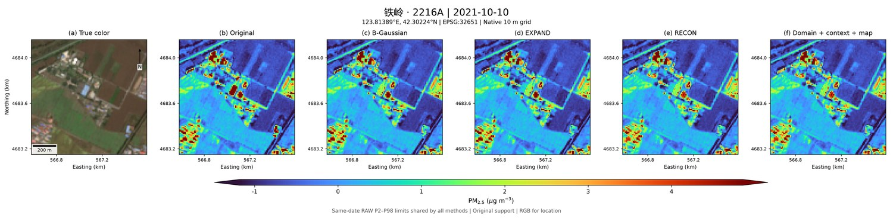
S12_xuzhou_1181A_2021-01-31
2021-01-31 · 6600 × 1620 · 0.41 MiB · 色限 74.83–88.35 μg/m³
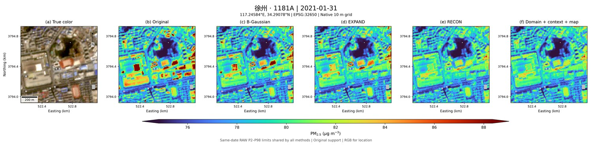
S12_xuzhou_1181A_2021-05-24
2021-05-24 · 6600 × 1620 · 0.42 MiB · 色限 21.49–38.34 μg/m³
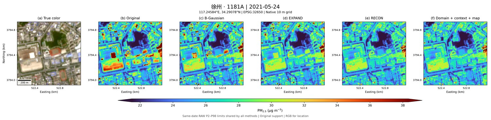
S12_xuzhou_1181A_2021-06-23
2021-06-23 · 6600 × 1620 · 0.42 MiB · 色限 31.25–48.39 μg/m³
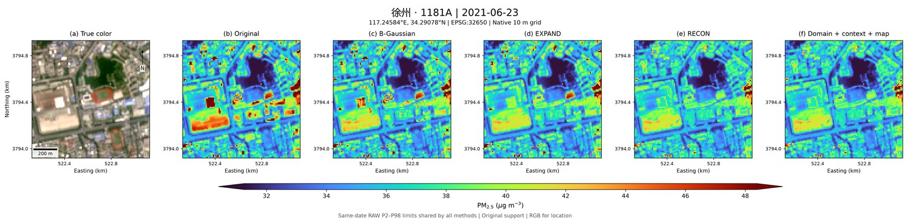
S12_xuzhou_1181A_2021-10-26
2021-10-26 · 6600 × 1620 · 0.41 MiB · 色限 54.94–67.97 μg/m³
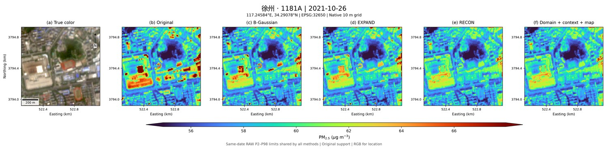
S13_yangquan_1742A_2021-02-01
2021-02-01 · 6600 × 1620 · 0.41 MiB · 色限 20.47–30.13 μg/m³
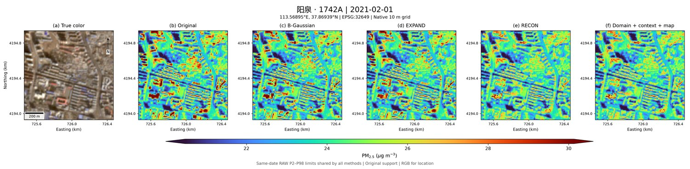
S13_yangquan_1742A_2021-05-30
2021-05-30 · 6600 × 1620 · 0.42 MiB · 色限 20.28–51.31 μg/m³
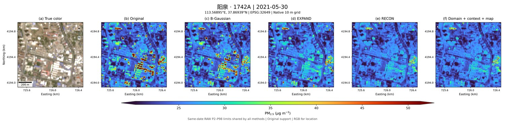
S13_yangquan_1742A_2021-06-19
2021-06-19 · 6600 × 1620 · 0.41 MiB · 色限 26.67–72.31 μg/m³
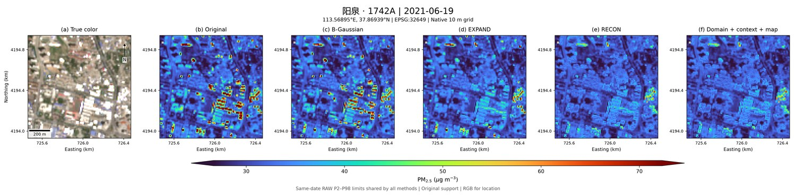
S13_yangquan_1742A_2021-09-07
2021-09-07 · 6600 × 1620 · 0.41 MiB · 色限 13.42–26.32 μg/m³
S14_yongzhou_2479A_2020-02-17
2020-02-17 · 6600 × 1620 · 0.39 MiB · 色限 19.29–26.88 μg/m³
S14_yongzhou_2479A_2020-05-07
2020-05-07 · 6600 × 1620 · 0.41 MiB · 色限 23.56–30.51 μg/m³
S14_yongzhou_2479A_2020-08-30
2020-08-30 · 6600 × 1620 · 0.41 MiB · 色限 24.22–31.76 μg/m³
S14_yongzhou_2479A_2020-11-13
2020-11-13 · 6600 × 1620 · 0.40 MiB · 色限 39.86–47.38 μg/m³
S15_yueyang_1848A_2021-02-06
2021-02-06 · 6600 × 1620 · 0.36 MiB · 色限 56.10–62.69 μg/m³
S15_yueyang_1848A_2021-05-07
2021-05-07 · 6600 × 1620 · 0.37 MiB · 色限 37.72–46.82 μg/m³
S15_yueyang_1848A_2021-06-01
2021-06-01 · 6600 × 1620 · 0.37 MiB · 色限 27.07–36.07 μg/m³
S15_yueyang_1848A_2021-09-14
2021-09-14 · 6600 × 1620 · 0.37 MiB · 色限 20.00–31.14 μg/m³
S16_zhoukou_2068A_2021-02-08
2021-02-08 · 6600 × 1620 · 0.40 MiB · 色限 41.94–53.82 μg/m³
S16_zhoukou_2068A_2021-05-24
2021-05-24 · 6600 × 1620 · 0.40 MiB · 色限 10.10–26.43 μg/m³
S16_zhoukou_2068A_2021-06-06
2021-06-06 · 6600 × 1620 · 0.40 MiB · 色限 15.71–31.95 μg/m³
S16_zhoukou_2068A_2021-09-21
2021-09-21 · 6600 × 1620 · 0.39 MiB · 色限 17.21–27.92 μg/m³
S17_zibo_1635A_2021-01-26
2021-01-26 · 6600 × 1620 · 0.41 MiB · 色限 143.44–147.56 μg/m³
S17_zibo_1635A_2021-05-24
2021-05-24 · 6600 × 1620 · 0.41 MiB · 色限 21.53–45.97 μg/m³
S17_zibo_1635A_2021-07-13
2021-07-13 · 6600 × 1620 · 0.42 MiB · 色限 14.84–36.26 μg/m³
S17_zibo_1635A_2021-09-13
2021-09-13 · 6600 × 1620 · 0.41 MiB · 色限 31.48–40.14 μg/m³
S18_beijing_1010A_2021-02-11
2021-02-11 · 6600 × 1620 · 0.40 MiB · 色限 138.37–141.48 μg/m³
S18_beijing_1010A_2021-04-27
2021-04-27 · 6600 × 1620 · 0.39 MiB · 色限 12.96–23.80 μg/m³
S18_beijing_1010A_2021-06-06
2021-06-06 · 6600 × 1620 · 0.39 MiB · 色限 20.24–32.13 μg/m³
S18_beijing_1010A_2021-10-29
2021-10-29 · 6600 × 1620 · 0.38 MiB · 色限 70.23–78.05 μg/m³
S19_dandong_1601A_2019-05-11
2019-05-11 · 6600 × 1620 · 0.36 MiB · 色限 27.27–38.13 μg/m³
S19_dandong_1601A_2019-08-09
2019-08-09 · 6600 × 1620 · 0.36 MiB · 色限 14.38–21.99 μg/m³
S19_dandong_1601A_2019-10-03
2019-10-03 · 6600 × 1620 · 0.36 MiB · 色限 20.57–29.35 μg/m³
S19_dandong_1601A_2019-12-15
2019-12-15 · 6600 × 1620 · 0.35 MiB · 色限 35.89–43.03 μg/m³
S20_daqing_1791A_2020-04-23
2020-04-23 · 6600 × 1620 · 0.41 MiB · 色限 9.25–22.56 μg/m³
S20_daqing_1791A_2020-06-17
2020-06-17 · 6600 × 1620 · 0.41 MiB · 色限 2.00–15.60 μg/m³
S20_daqing_1791A_2020-09-15
2020-09-15 · 6600 × 1620 · 0.41 MiB · 色限 7.28–21.11 μg/m³
S20_daqing_1791A_2020-12-04
2020-12-04 · 6600 × 1620 · 0.40 MiB · 色限 21.26–34.28 μg/m³
S21_jian_2367A_2021-01-14
2021-01-14 · 6600 × 1620 · 0.34 MiB · 色限 53.45–60.13 μg/m³
S21_jian_2367A_2021-04-29
2021-04-29 · 6600 × 1620 · 0.34 MiB · 色限 22.39–29.52 μg/m³
S21_jian_2367A_2021-06-08
2021-06-08 · 6600 × 1620 · 0.35 MiB · 色限 23.31–31.11 μg/m³
S21_jian_2367A_2021-09-11
2021-09-11 · 6600 × 1620 · 0.34 MiB · 色限 32.50–41.76 μg/m³
S22_jiaozuo_3169A_2021-01-12
2021-01-12 · 6600 × 1620 · 0.40 MiB · 色限 41.53–48.71 μg/m³
S22_jiaozuo_3169A_2021-05-27
2021-05-27 · 6600 × 1620 · 0.41 MiB · 色限 14.86–26.22 μg/m³
S22_jiaozuo_3169A_2021-06-06
2021-06-06 · 6600 × 1620 · 0.40 MiB · 色限 20.58–29.74 μg/m³
S22_jiaozuo_3169A_2021-10-24
2021-10-24 · 6600 × 1620 · 0.40 MiB · 色限 91.84–98.99 μg/m³
S23_jinan_3064A_2021-01-16
2021-01-16 · 6600 × 1620 · 0.42 MiB · 色限 77.07–83.80 μg/m³
S23_jinan_3064A_2021-03-02
2021-03-02 · 6600 × 1620 · 0.42 MiB · 色限 37.80–51.29 μg/m³
S23_jinan_3064A_2021-06-08
2021-06-08 · 6600 × 1620 · 0.43 MiB · 色限 26.98–41.65 μg/m³
S23_jinan_3064A_2021-10-13
2021-10-13 · 6600 × 1620 · 0.42 MiB · 色限 29.55–40.34 μg/m³
S24_jining_1653A_2021-02-23
2021-02-23 · 6600 × 1620 · 0.39 MiB · 色限 65.15–77.21 μg/m³
S24_jining_1653A_2021-05-24
2021-05-24 · 6600 × 1620 · 0.40 MiB · 色限 17.46–31.98 μg/m³
S24_jining_1653A_2021-06-08
2021-06-08 · 6600 × 1620 · 0.40 MiB · 色限 23.75–40.17 μg/m³
S24_jining_1653A_2021-09-11
2021-09-11 · 6600 × 1620 · 0.39 MiB · 色限 27.53–39.22 μg/m³
S25_linfen_3018A_2021-01-30
2021-01-30 · 6600 × 1620 · 0.38 MiB · 色限 44.42–51.74 μg/m³
S25_linfen_3018A_2021-05-25
2021-05-25 · 6600 × 1620 · 0.40 MiB · 色限 26.43–39.54 μg/m³
S25_linfen_3018A_2021-07-14
2021-07-14 · 6600 × 1620 · 0.39 MiB · 色限 25.34–35.32 μg/m³
S25_linfen_3018A_2021-09-12
2021-09-12 · 6600 × 1620 · 0.39 MiB · 色限 29.03–39.35 μg/m³
S26_nantong_1170A_2021-02-17
2021-02-17 · 6600 × 1620 · 0.38 MiB · 色限 6.32–15.53 μg/m³
S26_nantong_1170A_2021-03-24
2021-03-24 · 6600 × 1620 · 0.38 MiB · 色限 52.05–61.96 μg/m³
S26_nantong_1170A_2021-06-22
2021-06-22 · 6600 × 1620 · 0.38 MiB · 色限 16.56–27.59 μg/m³
S26_nantong_1170A_2021-10-30
2021-10-30 · 6600 × 1620 · 0.38 MiB · 色限 34.82–43.26 μg/m³
S27_nanyang_2407A_2021-02-21
2021-02-21 · 6600 × 1620 · 0.40 MiB · 色限 36.38–45.53 μg/m³
S27_nanyang_2407A_2021-04-17
2021-04-17 · 6600 × 1620 · 0.40 MiB · 色限 39.74–50.82 μg/m³
S27_nanyang_2407A_2021-06-06
2021-06-06 · 6600 × 1620 · 0.41 MiB · 色限 15.91–26.77 μg/m³
S27_nanyang_2407A_2021-09-14
2021-09-14 · 6600 × 1620 · 0.40 MiB · 色限 21.94–30.45 μg/m³
S28_xuzhou_1182A_2021-01-31
2021-01-31 · 6600 × 1620 · 0.38 MiB · 色限 74.82–85.77 μg/m³
S28_xuzhou_1182A_2021-05-24
2021-05-24 · 6600 × 1620 · 0.39 MiB · 色限 21.96–33.28 μg/m³
S28_xuzhou_1182A_2021-06-20
2021-06-20 · 6600 × 1620 · 0.39 MiB · 色限 17.84–31.14 μg/m³
S28_xuzhou_1182A_2021-10-13
2021-10-13 · 6600 × 1620 · 0.38 MiB · 色限 10.74–19.88 μg/m³
S29_yangquan_1738A_2021-02-14
2021-02-14 · 6600 × 1620 · 0.40 MiB · 色限 74.10–83.67 μg/m³
S29_yangquan_1738A_2021-05-30
2021-05-30 · 6600 × 1620 · 0.39 MiB · 色限 19.21–52.79 μg/m³
S29_yangquan_1738A_2021-06-29
2021-06-29 · 6600 × 1620 · 0.39 MiB · 色限 36.03–74.81 μg/m³
S29_yangquan_1738A_2021-09-12
2021-09-12 · 6600 × 1620 · 0.39 MiB · 色限 35.77–43.24 μg/m³
S30_yongzhou_2478A_2020-02-17
2020-02-17 · 6600 × 1620 · 0.38 MiB · 色限 18.82–27.06 μg/m³
S30_yongzhou_2478A_2020-04-12
2020-04-12 · 6600 × 1620 · 0.38 MiB · 色限 17.63–23.19 μg/m³
S30_yongzhou_2478A_2020-08-15
2020-08-15 · 6600 × 1620 · 0.39 MiB · 色限 8.75–19.36 μg/m³
S30_yongzhou_2478A_2020-11-08
2020-11-08 · 6600 × 1620 · 0.39 MiB · 色限 35.98–42.74 μg/m³
yueyang_2022-04-07
2022-04-07 · 6600 × 1620 · 0.39 MiB · 色限 31.60–37.91 μg/m³
yueyang_2022-07-01
2022-07-01 · 6600 × 1620 · 0.39 MiB · 色限 10.40–20.02 μg/m³
qujing_2022-02-10
2022-02-10 · 6600 × 1620 · 0.39 MiB · 色限 15.68–36.92 μg/m³
qujing_2022-03-07
2022-03-07 · 6600 × 1620 · 0.39 MiB · 色限 19.18–38.53 μg/m³
yueyang_2022-10-14
2022-10-14 · 6600 × 1620 · 0.39 MiB · 色限 23.11–30.34 μg/m³
anshan_2022-10-05
2022-10-05 · 6600 × 1620 · 0.40 MiB · 色限 0.95–9.51 μg/m³
WINDOW_A_2021-12-30
2021-12-30 · 6600 × 1620 · 0.78 MiB · 色限 7.39–17.61 μg/m³
WINDOW_A_2022-04-07
2022-04-07 · 6600 × 1620 · 0.80 MiB · 色限 26.94–40.22 μg/m³
WINDOW_A_2022-07-08
2022-07-08 · 6600 × 1620 · 0.79 MiB · 色限 14.09–29.31 μg/m³
WINDOW_A_2022-10-06
2022-10-06 · 6600 × 1620 · 0.77 MiB · 色限 14.09–23.24 μg/m³
WINDOW_B_2022-04-07
2022-04-07 · 6600 × 1620 · 0.79 MiB · 色限 26.79–38.65 μg/m³
WINDOW_B_2022-07-08
2022-07-08 · 6600 × 1620 · 0.78 MiB · 色限 14.30–27.66 μg/m³
WINDOW_B_2022-10-06
2022-10-06 · 6600 × 1620 · 0.77 MiB · 色限 13.70–22.24 μg/m³
yueyang_2022-03-08
2022-03-08 · 6600 × 1620 · 0.39 MiB · 色限 25.72–32.61 μg/m³
yueyang_2022-07-31
2022-07-31 · 6600 × 1620 · 0.39 MiB · 色限 14.44–23.74 μg/m³
yueyang_2022-08-20
2022-08-20 · 6600 × 1620 · 0.40 MiB · 色限 16.10–24.43 μg/m³
yueyang_2022-08-25
2022-08-25 · 6600 × 1620 · 0.39 MiB · 色限 23.10–28.93 μg/m³
yueyang_2022-09-14
2022-09-14 · 6600 × 1620 · 0.40 MiB · 色限 20.36–28.35 μg/m³
yueyang_2022-09-29
2022-09-29 · 6600 × 1620 · 0.39 MiB · 色限 32.71–40.33 μg/m³
yueyang_2022-10-19
2022-10-19 · 6600 × 1620 · 0.39 MiB · 色限 20.15–27.76 μg/m³
yueyang_2022-12-18
2022-12-18 · 6600 × 1620 · 0.39 MiB · 色限 31.56–38.53 μg/m³
yueyang_2022-12-23
2022-12-23 · 6600 × 1620 · 0.39 MiB · 色限 44.26–50.54 μg/m³
qujing_2019-04-22
2019-04-22 · 6600 × 1620 · 0.39 MiB · 色限 35.54–62.14 μg/m³
qujing_2019-07-01
2019-07-01 · 6600 × 1620 · 0.40 MiB · 色限 15.75–40.15 μg/m³
qujing_2020-02-11
2020-02-11 · 6600 × 1620 · 0.39 MiB · 色限 18.20–41.40 μg/m³
qujing_2020-04-21
2020-04-21 · 6600 × 1620 · 0.39 MiB · 色限 16.73–41.18 μg/m³
qujing_2020-09-08
2020-09-08 · 6600 × 1620 · 0.40 MiB · 色限 10.31–37.44 μg/m³
qujing_2021-05-01
2021-05-01 · 6600 × 1620 · 0.38 MiB · 色限 13.32–38.99 μg/m³
qujing_2021-09-23
2021-09-23 · 6600 × 1620 · 0.39 MiB · 色限 8.23–33.69 μg/m³
qujing_2022-05-06
2022-05-06 · 6600 × 1620 · 0.39 MiB · 色限 17.17–40.01 μg/m³
qujing_2022-08-19
2022-08-19 · 6600 × 1620 · 0.39 MiB · 色限 7.14–31.52 μg/m³
anshan_2019-10-01
2019-10-01 · 6600 × 1620 · 0.40 MiB · 色限 31.15–38.15 μg/m³
anshan_2020-09-20
2020-09-20 · 6600 × 1620 · 0.40 MiB · 色限 5.83–16.67 μg/m³
anshan_2020-11-04
2020-11-04 · 6600 × 1620 · 0.40 MiB · 色限 16.33–25.53 μg/m³
anshan_2022-05-18
2022-05-18 · 6600 × 1620 · 0.40 MiB · 色限 16.11–21.49 μg/m³
anshan_2022-11-04
2022-11-04 · 6600 × 1620 · 0.40 MiB · 色限 12.38–19.91 μg/m³